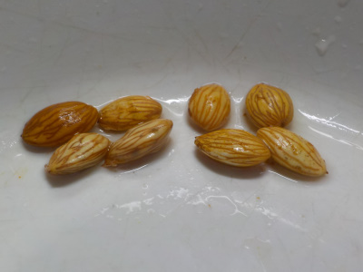
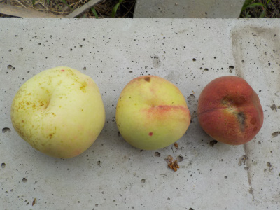
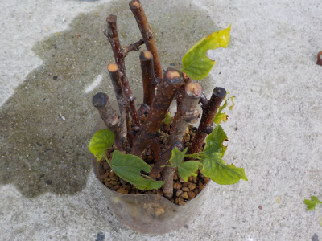
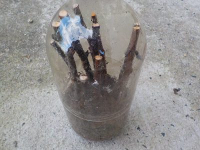
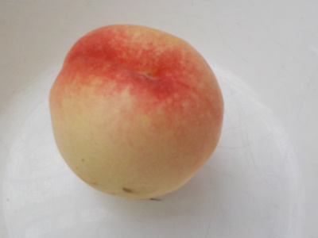
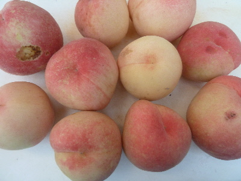
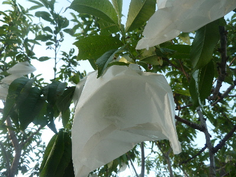
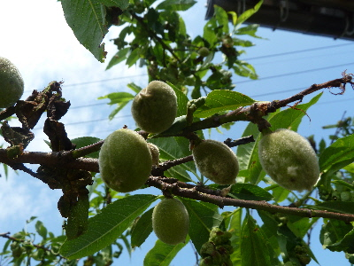
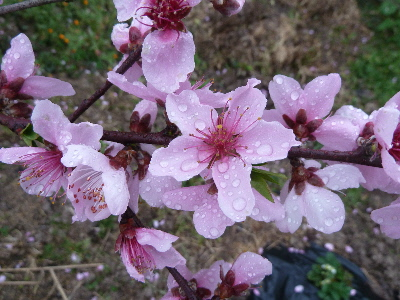
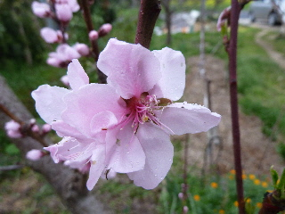

桃の種を採りました。
2020/07/25

桃の種の中身はこんな感じでした。
杏子に似ていますね。
殻はとても硬かったです。杏子より硬かった。
明日蒔こうと思っています。
2020/07/25

桃の種の中身はこんな感じでした。
杏子に似ていますね。
殻はとても硬かったです。杏子より硬かった。
明日蒔こうと思っています。
2020/07/18

白くて大きいのは袋をかけたもの。残り二つは袋を掛け忘れたものです。
みんな甘くなっていました。
なんとなく熟れるとピンクなイメージですが、白くても甘いんですね。
2020/06/07

2月に挿し木をしているので、根っこがあるかもしれません。
近いうちに根っこがあるのかを確認しようと思います。
2020/02/15

剪定した枝をペットボトルで挿し木しました。
前回は全滅でしたが、今回はどうかな？
2019/07/14
今年は桃が不作で3個しか袋かけしませんでした。

一つがピンク色になったので収穫して食べました。
美味しかったです。
美味しいの食べちゃうと、来年食べるためにちゃんと育てようって思いますね。
2018/07/15
大きくて熟れた桃から収穫していたんですが、害虫が気になりだしたので残りを全部収穫しました。

桃には袋掛けをしていたんですが、だんだん袋の殺虫作用がなくなっているのかな？
ちょっと置いておいて、柔らかくなったら食べようと思います。
2018/05/26
桃の木をみたら、ゾウムシが大量にいました。
だいぶ被害にあってるみたい。

あわてて袋かけをしました。
次はもっと早い時期に袋かけをしようと思います。
2016/05/15
今はいっぱいあるけど、何個残るかな？

収獲出来るまでなかなか育たないです。
たまには沢山食べたいなー。
2016/04/03
桃の花は派手ですね。

色が濃いので、目立ちますね。
もうちょっと淡いと好きかな。
2013/03/31
桃はちょっと花が大きくて見栄えがいいです。

柔らかそうな花びらがかわいいですね。
色も綺麗です。
これが沢山の実になると、なおいいですね。
桃は美味しい。